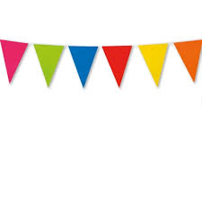

HTML står for "HyperText Markup Language" og det bruges til at skabe struktur både for tekst og billeder.

Af Ida Korsbæk Thomsen
Når man anvender HTML, er det vigtigt at benytte "tags", da det er måden at få sit "element" til at fungere på. Der findes mange forsekllige tags, men her er en lille liste over dem som er mest almindelige
Tags
- Headings (overskrifter) - h1 tom. h6
- Dette anvendes når man skal lave en overskrift
- Header (sidehoved)
- Dette anvendes når man vil skabe en under overskrift
- Anchor tag - a + attributter
- Dette anvendes når man vil skape et hyperlink til en anden fil, det kan både være et billede eller en hjemmeside.
Hvis du gerne vil vide mere om semantiske tags kan du læse mere på side 2